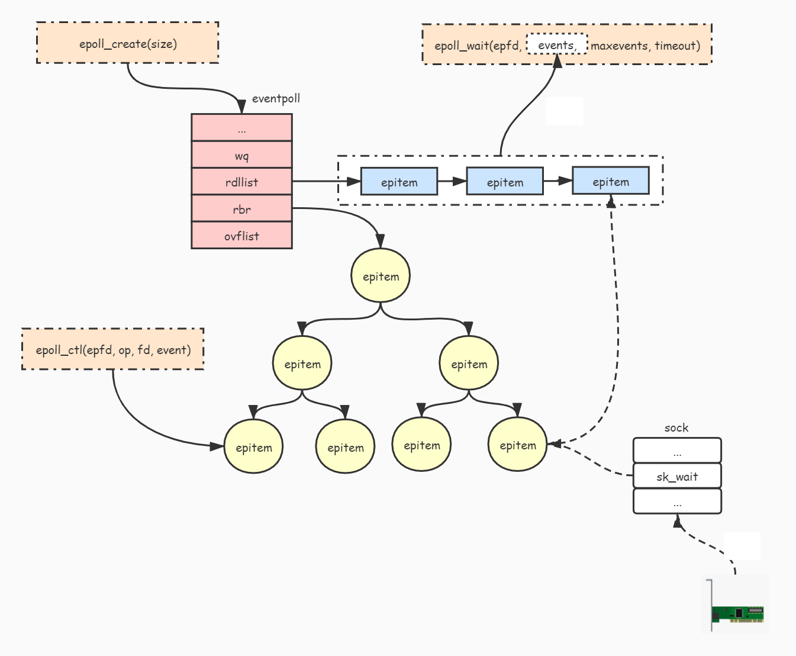

Networking (1) I/O multiplexing
Thông tin cập nhật:
08/03/2025:Bổ sung ví dụ epoll hoạt động ở level-triggered mode.
Trong 2 tháng gần đây, mỗi ngày mình đều loay hoay với việc benchmark 1 opensource có liên quan tới chủ đề webRTC. Với 1 opensource cũng đã hơn chục năm, rất nhiều sao trên github nhưng kết quả test lại không đạt được như kì vọng về số connections, bitrate lẫn các metrics của server. Vì mình chưa có kinh nghiệm nhiều về mảng này nên chọn cách vào đọc source để hiểu được mô hình test cũng như đảm bảo mình đang viết đúng script test, và sau khi mày mò một thời gian dài, cuối cùng mình cũng thấy được việc mình có vấn đề trong cách tiếp cận một mảng kiến thức mới, sau khi đọc source và tìm hiểu thêm về webRTC, mình mới thực sự hiểu document của các tác giả :”).
Mục tiêu đặt ra là test trên môi trường nội bộ của công ty và và sau đó là trên Oracle với server riêng lẻ và cluster. Tưởng chừng như sau khi có số liệu trên môi trường nội bộ của công ty rồi việc test trên Oracle server cũng suông sẻ nhưng không, nó còn đau khổ hơn xD, lại mất 2 3 tuần, đến lúc tuyệt vọng, anh senior team mình bảo mình yêu cầu team infrastructure cùng tham gia để tìm hiểu vấn đề, và cuối cùng thì thật là abcxyz khi họ nhờ Oracle team và biết vấn đề nằm ở network giữa 2 region của server.
Anyway trước khi tới được kết quả, mình cũng đã có cơ hội tìm hiểu về một vài vấn đề liên quan đến network (chủ yếu là ở linux OS), những thứ mà hồi xưa học môn mạng máy tính ở trường không hiểu gì :))))), nên vì thế, mình dự định viết một vài bài về những thứ mình đã biết trong 2 tháng vừa qua.
Bài đầu tiên trong chuỗi này (và cũng không biết sẽ có bao nhiêu bài), về mô hình I/O multiplexing.
File Descriptor (FD): “In Linux, everything is a file”
Trong linux, FD là khái niệm chỉ sự định danh cho tệp tin, hoặc các tài nguyên I/O khác như socket khi một process thao tác với các tài nguyên này. Kernel lưu trữ thông tin các file được mở của mỗi process và FD là giá trị index trỏ tới các bản ghi này.
Mô hình I/O multiplexing hỗ trợ 1 thread có thể theo dõi vào nhiều FD cùng 1 lúc, bị block, chờ và nhận được thông báo về các FD sẵn sàng cho việc đọc dữ liệu. Ưu điểm của mô hình này so với mô hình truyền thống I/O blocking là giảm context switch giữa các threads vì chúng ta chỉ có 1 main thread để nhận request, xử lý cũng như đọc gói tin, tránh được race condition trong lập trình multithreads, có thể handle được số lượng lớn requests cùng lúc, tuy nhiên, mô hình này lại bị giới hạn bởi 1 CPU.
Các system call giúp bạn gọi Linux theo dõi các FD là poll, select và epoll.
poll/select
int select(int nfds,
fd_set *restrict readfds,
fd_set *restrict writefds,
fd_set *restrict errorfds,
struct timeval *restrict timeout);
Cách select hoạt động là truyền vào một danh sách các FD cần theo dõi và timeout, kernel sẽ lặp qua lần lượt các FD và kiểm tra xem các FD có thể đọc, ghi hay có khả năng lỗi. Giá trị timeout quyết định thời gian thread bị blocked khi hàm select được gọi.
- Hàm
selectsẽ block thread cho tới khi có FD sẵn sàng cho việc đọc, ghi, có khả năng lỗi hoặc thời gian timeout đã trôi qua - Nếu timeout được gán giá trị
NULL, hàm select sẽ block thread cho tới khi nào có FD sẵn sàng - Nếu timeout được gán giá trị 0, hàm select sẽ return ngay lập tức

Mô hình này có nhiều nhược điểm:
- Số FD được mở bởi 1 process bị giới hạn bởi giá trị FD_SETSIZE, giá trị mặc định là 1024
- FD cần được theo dõi được truyền từ user space sang kernel state, đây là một chi phí CPU lớn khi có nhiều FD cần theo dõi
- Kernel kiểm tra các FD bằng cách lặp qua tất cả giá trị, độ phức tạp là O(n), vì vậy CPU time cần để sử lý sẽ tăng tuyến tính với số lượng FD cần kiểm tra
epoll
epoll là một phiên bản cải tiến của poll/select, giải quyết vấn đề hiệu năng và số lượng FD.
int listenfd = socket(AF_INET, SOCK_STREAM, 0);
bind(listenfd, ...)
listen(listenfd, ...)
int epfd = epoll_create(...);
epoll_ctl(epfd,...);
while(1){
int n = epoll_wait(...)
for(data from socket){
// TODO
}
}
Đầu tiên tạo một epoll object với hàm epoll_create, cấu trúc của 1 epoll instance:
- danh sách các FD để theo dõi với cấu trúc red-black tree, được cập nhật mỗi khi application gọi syscall
epoll_ctl. - danh sách các FD sẵn sàng với cấu trúc linked list:
- được hiện thực bằng cơ chế gọi callback, mỗi fd sẽ gọi callback để thêm nó vào danh sách kết quả khi sẵn sàng.

Ưu điểm của epoll:
- Các FD cần được theo dõi được lưu trong read black tree ở
kernel space:- Các thao tác thêm, sửa, xoá được tối ưu, độ phức tạp
O(log(n)). - Giảm việc copy một lượng lớn FD từ
user spacexuốngkernel spacekhi cần gọi syscall.
- Các thao tác thêm, sửa, xoá được tối ưu, độ phức tạp
- Sử dụng hàm callback để thêm FD sẵn sàng vào ready list thay vì lặp qua tất cả FD để kiểm tra.
Level-Triggered vs Edge-Triggered
- get a list of every file descriptor you’re interested in that is readable (“level-triggered”)
- get notifications every time a file descriptor becomes readable (“edge-triggered”)
Mặc định, epoll sẽ hoạt động với level-triggered, điều này làm nó gần như giống với poll/select nhưng tối ưu hơn về hiệu năng.
Ngoài ra, epoll còn có thể hoạt động với edge-triggered, epoll_wait trả về cho chúng ta có sự thay đổi nào trên FD kể từ lần gọi trước hay không.
Để sử dụng edge-triggered với epoll, chúng ta sử dụng cờ EPOLLET ở ev.events khi gọi hàm epoll_ctl.
Để làm rõ hơn sự khác nhau giữa 2 level, xem ví dụ sau: Giả sử chúng ta muốn theo dõi để đọc dữ liệu một socket, có các bước như sau:
- Dữ liệu đến socket.
- Thực hiện gọi hàm
epoll_wait, kết quả trả về của hàm này là FD đã sẵn sàng cho dù chúng ta đang sử dụnglevel-triggeredhayedged-triggered. - Thực hiện gọi hàm
epoll_wait1 lần nữa.
Kết quả của bước thứ 3 như sau:
level-triggered: trả về FD đang sẵn sàng, nếu không đọc dữ liệu từ socket, cho dù gọi 1000 lần thì kết quả vẫn vậy.edge-triggered: thread hiện tại bị block vì không có dữ liệu mới đến socket. Để tránh bị block:- chúng ta nên sử dụng
edge-triggeredvớinonblocking FDvà cờEAGAINđể kiểm tra liệu FD có dữ liệu mới hay chưa. - xử lý nghiệp vụ để đọc hết dữ liệu ở socket.
- chúng ta nên sử dụng
Ví dụ
-
Repository epoller là một ví dụ để bạn có thể kiểm tra lại các kiến thức ở trên, khi sử dụng để kiểm tra, mình có phát hiện 1 lỗi và có tạo issue hỏi ở đây: Should we close connection when flag is EOF in Wait method
-
Ngoài ra, mình có tạo 1 ví dụ để cách hoạt động của
level-triggeredở đây nữa, bạn có thể chạy sử dụng để chạy trên hệ điều hành Linux. epoll - level-triggered
Tổng kết
Qua bài viết này, mình đã tóm gọn lại về tổng quát cách mô hình I/O multiplexing hoạt động với các cơ chế ở đằng sau như poll, select và epoll.
Hiện nay, nhiều công cụ và framework nổi tiếng cũng áp dụng epoll:
- Node.js xài libuv.
- Python, Coturn (đây là anh chàng mà mình đau khổ hơn 2 tháng .-.) xài libev/libevent.
- Java xài Netty.
- Golang thì tự code (netpoller).
Tham khảo